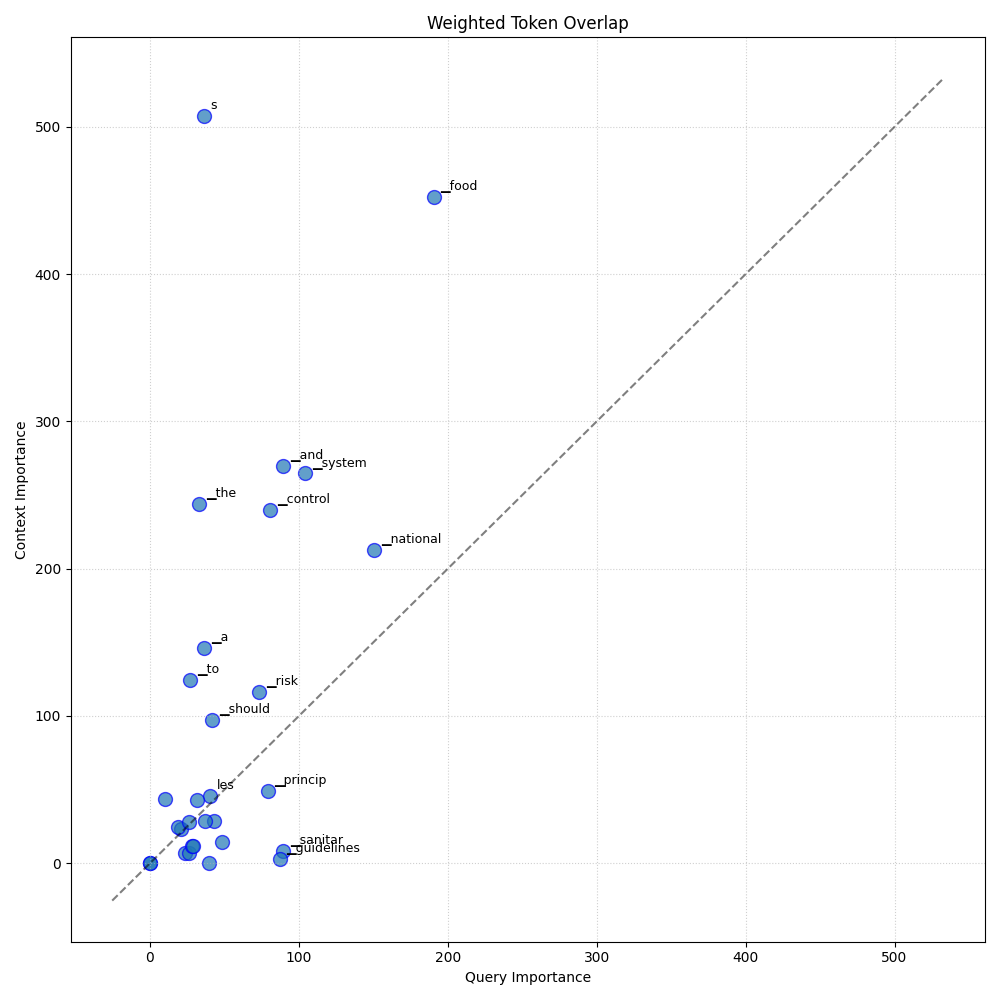

Analysis: query_122
Query: ▁que ry : ▁W ht ▁are ▁the ▁key ▁princip les ▁and ▁guidelines ▁that ▁should ▁be ▁considered ▁when ▁developing ▁a ▁national ▁food ▁control ▁system ▁to ▁ensure ▁effective ▁sanitar y ▁measure s ▁and ▁risk ▁analysis ▁framework s ?
Document Relevance

Weighted Overlap

Token Comparison

Documents
Document 1 (Click to Expand)
▁* ▁The ▁resources ▁needed ▁to ▁meet ▁the ▁objective s ▁of ▁the ▁national ▁food ▁control ▁system , ▁their ▁al location ▁and ▁how ▁the ▁system ▁is ▁to ▁be ▁fund ed ; ▁* ▁Sur ve illa nce , ▁investigation , ▁emergency ▁prepared ness ▁and ▁response ▁to ▁food ▁bor ne ▁and ▁food ▁related ▁incident s ; ▁* ▁Assessment ▁and ▁evaluation ; ▁* ▁Sta ke holder ▁engagement ; ▁* ▁International ▁communication ▁and ▁harmoni z ation ; ▁and ▁* ▁Work ing ▁princip les ▁for ▁risk ▁analysis ▁for ▁food ▁safety ▁for ▁application ▁by ▁government s ▁( CA C / GL ▁10 ▁62 -2007 ). ▁* ▁Work ing ▁princip les ▁for ▁risk ▁analysis ▁for ▁food ▁safety ▁for ▁application ▁by ▁government s ▁* ▁An ▁appropriate ▁system ▁design ▁should ▁consider ▁a ▁range ▁of ▁factors ▁including ▁( but ▁not ▁limited ▁to ) ▁product ▁risk , ▁current ▁scientific ▁information , ▁industry ▁based ▁control s ▁and ▁system ▁review ▁finding s . ▁It ▁should ▁also ▁provide ▁for ▁flexibil ity ▁in ▁the ▁application ▁of ▁control ▁measure s ▁to ▁reflect ▁variation s ▁in ▁these ▁factors . ▁* ▁Development ▁of ▁an ▁effective ▁method ▁of ▁data ▁collection ▁across ▁the ▁food ▁chain ▁is ▁important ▁for ▁situation al ▁awareness , ▁performance ▁measure ment ▁and ▁continuo us ▁review ▁and ▁system ▁improvement . ▁For ▁instance , ▁sur ve illa nce ▁and ▁monitoring ▁programs ▁can ▁be ▁used ▁to ▁target ▁priorit y ▁risk s . ▁* ▁The ▁ competent ▁authority ▁should ▁ utilise ▁finding s ▁from ▁laboratori es ▁to ▁monitor ▁trend s ▁in ▁the ▁food ▁chain ▁and ▁assist ▁in ▁compliance ▁and ▁enforcement . ▁Labor ator y ▁access ▁and ▁capacity ▁should ▁be ▁comme n surat e ▁with ▁the ▁need ▁to ▁address ▁priorit y ▁food ▁risk s . ▁* ▁The ▁national ▁food ▁control ▁system ▁should ▁be ▁fully ▁document ed ▁and ▁public ly ▁available , ▁to ▁ensure ▁its ▁trans pare ncy ▁and ▁consistent ▁application ▁of ▁control ▁measure s , ▁including ▁a ▁description ▁of ▁its ▁ scope ▁and ▁operation , ▁and ▁a ▁clear ▁description ▁of ▁the ▁role s ▁and ▁ responsibilities ▁of ▁all ▁parties . ▁* ▁9 ▁should ▁be ▁based ▁on ▁risk ▁and ▁designed ▁to ▁take ▁into ▁account ▁a ▁number ▁of ▁factors National ▁food ▁control ▁systems ▁should ▁be ▁designed ▁to ▁ensure ▁administrative ▁procedure s ▁are ▁in ▁place ▁for ▁documentation ▁of ▁control ▁programs ▁and ▁their ▁finding s . 10 ▁Control ▁programs ▁* ▁including ▁but ▁not limit ed ▁to : ▁* ▁Guide lines ▁on ▁the ▁judge ment ▁of ▁equivale nce ▁of ▁sanitar y ▁measure s ▁associated ▁with ▁food ▁inspect ion ▁and ▁certification ▁systems ▁( CA C / GL ▁Guide lines ▁on ▁the ▁judge ment ▁of ▁equivale nce ▁of ▁sanitar y ▁measure s ▁associated ▁with ▁food ▁inspect ion ▁and ▁certification ▁systems ▁* ▁53 - 2003 ) ▁* ▁Control ▁program ▁is ▁the ▁collective ▁actions ▁and ▁activities ▁in ▁place ▁to ▁manage ▁specific ▁food ▁safety ▁hazard s ▁and ▁assure ▁the ▁quality ▁and ▁safety ▁of ▁food ▁and ▁fair ▁practice s ▁in ▁the ▁food ▁trade . ▁Control ▁program ▁is ▁the ▁collective ▁actions ▁and ▁activities ▁in ▁place ▁to ▁manage ▁specific ▁food ▁safety ▁hazard s ▁and ▁assure ▁the ▁quality ▁and ▁safety ▁of ▁food ▁and ▁fair ▁practice s ▁in ▁the ▁food ▁trade . ▁* ▁Knowledge ▁of ▁operator s ▁at ▁various ▁stage s ▁of ▁the ▁food ▁chain ▁typical ▁and ▁a typ ical ▁use ▁of ▁products , ▁raw ▁materials ▁and ▁by product s ; ▁structure ▁of ▁production ▁and ▁supply ▁chain s ; ▁production ▁technologies , ▁process es ▁and ▁practice s ; ▁relevant ▁product ▁tra cing ▁information ; ▁and
Document 2 (Click to Expand)
▁A ▁ competent ▁authority ▁should ▁make ▁decisions ▁within ▁a ▁national ▁food ▁control ▁system ▁based ▁on ▁scientific ▁information , ▁evidence ▁and / or ▁risk ▁analysis ▁princip les 16 . ▁4 ▁17. ▁as ▁appropriate . ▁PRI N CI PLE ▁7 ▁CO O PER ATION ▁AND ▁C OOR DIN ATION ▁BE TW EEN ▁MULTI PLE ▁COMP ET ENT ▁AU TH ORI TIES 4 ▁18. ▁PRI N CI PLE ▁8 ▁PRE VEN TIVE ▁ME A SU RES 18 . ▁19. ▁PRI N CI PLE ▁9 ▁SEL F ▁ ASS ESS MENT ▁AND ▁RE VIEW ▁PRO C EDU RES 19 . ▁* ▁62 -2007 ) ▁* ▁( CA C / GL ▁62 -2007 ) For ▁the ▁purpose ▁of ▁this ▁document ▁food ▁business ▁operator ▁includes ▁producer s , ▁processo rs , ▁whole sal ers , ▁distributor s , ▁import ers , ▁export ers ▁and ▁retail ers ▁and ▁relevant ▁risk ▁analysis ▁policies ▁developed ▁by ▁the ▁World ▁Organisation ▁for ▁Animal ▁Health ▁( O IE ). ▁Work ing ▁Princip les ▁for ▁Risk ▁Analys is ▁for ▁Food ▁Safety ▁for ▁Application ▁by ▁Government s ▁In ▁accordance ▁with ▁members ▁obliga tions ▁under ▁the ▁World ▁Trade ▁Organisation ▁Agreement s , ▁risk ▁analysis ▁framework s ▁adopt ed ▁by ▁national ▁government s ▁in ▁the ▁context ▁of ▁a ▁national ▁food ▁control ▁system ▁should ▁be ▁consistent ▁with ▁the ▁Code x ▁( CA C / GL ▁PRI N CI PLE ▁10 ▁REC OG NI TION ▁OF ▁ OTHER ▁SY STEM S ▁( IN C LU DING ▁E QUI VAL ENCE ) 5 ▁21. ▁apply ▁at ▁the ▁national ▁and ▁international ▁level . ▁The ▁concept ▁of ▁recognition ▁of ▁systems , ▁including ▁equivale nce 21 . ▁5 ▁PRI N CI PLE ▁11 ▁LEG AL ▁FO UND ATION 5 ▁22. ▁PRI N CI PLE ▁12 ▁HAR MO NIS ATION 22 . ▁23. ▁PRI N CI PLE ▁13 ▁RES OUR CES 23 . ▁24. ▁* ▁The ▁national ▁food ▁control ▁system ▁of ▁a ▁country ▁will ▁be ▁based ▁on ▁that ▁country ’ s ▁particular ▁government al ▁or ▁constitution al ▁arrangement s ▁and ▁institution s , ▁( e . g . ▁presence ▁or ▁ absence ▁of ▁sub ▁national ▁government s ), ▁national ▁goals ▁and ▁objective s . ▁* ▁The ▁national ▁food ▁control ▁system ▁of ▁a ▁country ▁will ▁be ▁based ▁on ▁that ▁country ’ s ▁particular ▁government al ▁or ▁constitution al ▁arrangement s ▁and ▁institution s , ▁( e . g . ▁presence ▁or ▁ absence ▁of ▁sub ▁national ▁government s ), ▁national ▁goals ▁and ▁objective s . ▁The ▁national ▁food ▁control ▁system ▁of ▁a ▁country ▁will ▁be ▁based ▁on ▁that ▁country ’ s ▁particular ▁government al ▁or ▁constitution al ▁arrangement s ▁and ▁institution s , ▁( e . g . ▁presence ▁or ▁ absence ▁of ▁sub ▁national ▁government s ), ▁national ▁goals ▁and ▁objective s . ▁* ▁Advance s ▁and ▁fost ers ▁knowledge , ▁science , ▁research ▁and ▁education ▁regarding ▁food ▁safety ; ▁* ▁Provide s ▁leadership ▁and ▁coordina tion ▁for ▁the ▁national ▁food ▁control ▁system ; ▁* ▁Design s , ▁develop s , ▁operate s , ▁evaluat es ▁and ▁improve s ▁the ▁national ▁food ▁control ▁system ; ▁* ▁Esta bli shes , ▁implement s ▁and ▁en force s ▁science ▁and ▁risk ▁based ▁regulator y ▁requirements ▁that ▁encourage ▁and ▁promote ▁positive ▁food ▁safety ▁outcome s ; ▁* ▁Esta bli shes , ▁implement s ▁and ▁en force s ▁regulator y ▁requirements ▁support ing ▁fair ▁practice s ▁in ▁the ▁food ▁trade ;
Document 3 (Click to Expand)
▁* ▁Knowledge ▁of ▁operator s ▁at ▁various ▁stage s ▁of ▁the ▁food ▁chain ▁typical ▁and ▁a typ ical ▁use ▁of ▁products , ▁raw ▁materials ▁and ▁by product s ; ▁structure ▁of ▁production ▁and ▁supply ▁chain s ; ▁production ▁technologies , ▁process es ▁and ▁practice s ; ▁relevant ▁product ▁tra cing ▁information ; ▁and ▁* ▁Risk ▁of ▁un fair ▁practice s ▁in ▁the ▁food ▁trade ▁associated ▁with ▁different ▁products , ▁such ▁as ▁potential ▁fraud ▁or ▁de ception ▁of ▁consumer s ; ▁* ▁Information ▁that ▁may ▁be ▁available ▁from ▁a ▁range ▁of ▁sources ▁including ▁government , ▁academia , ▁scientific ▁institution s ▁and ▁industry ▁data ; ▁* ▁Statist ical ▁data ▁on ▁production , ▁trade ▁and ▁consum p tion ; ▁* ▁Results ▁of ▁previous ▁control s ▁including ▁ analytic al ▁results ; ▁* ▁The ▁effective ness ▁and ▁reli ability ▁of ▁control s ▁including ▁those ▁of ▁food ▁business ▁operator s ; ▁* ▁Knowledge ▁of ▁operator s ▁at ▁various ▁stage s ▁of ▁the ▁food ▁chain ▁typical ▁and ▁a typ ical ▁use ▁of ▁products , ▁raw ▁materials ▁and ▁by product s ; ▁structure ▁of ▁production ▁and ▁supply ▁chain s ; ▁production ▁technologies , ▁process es ▁and ▁practice s ; ▁relevant ▁product ▁tra cing ▁information ; ▁and ▁* ▁In ▁the ▁ absence ▁of ▁risk ▁analysis ▁data ▁control ▁programs ▁should ▁be ▁based ▁on ▁technical ▁and ▁scientific ▁data ▁developed ▁from current ▁knowledge ▁and ▁practice . ▁* ▁In ▁the ▁ absence ▁of ▁risk ▁analysis ▁data ▁control ▁programs ▁should ▁be ▁based ▁on ▁technical ▁and ▁scientific ▁data ▁developed ▁from current ▁knowledge ▁and ▁practice . ▁* ▁Products , ▁from ▁raw ▁material ▁to ▁the ▁final ▁products , ▁including ▁intermedi ate ▁products ; ▁* ▁Esta b lish ments , ▁installation s , ▁equipment , ▁personnel ▁and ▁material ; ▁* ▁Products , ▁from ▁raw ▁material ▁to ▁the ▁final ▁products , ▁including ▁intermedi ate ▁products ; ▁* ▁Pre venta tive ▁control s ▁including ▁Good ▁Agri cultural ▁Practic e ▁G AP , ▁Good ▁Manufa c turing ▁Practic es ▁( G MP ), ▁Good ▁Hy gi ene ▁Practic es ▁( G HP ) ▁and ▁Hazard ▁Analys is ▁Critic al ▁Control ▁Point ▁( HA CCP ) ▁princip les ; ▁* ▁Me ans ▁of ▁distribution ; ▁and ▁Human ▁resources , ▁infrastructure ▁and ▁confidential ity . ▁* ▁In spec tion , ▁ver ification ▁and ▁audit ▁including ▁on - site ▁Ex a mination ▁of ▁the ▁results ▁of ▁any ▁ver ification ▁systems ▁operate d ▁by ▁the ▁establish ment . ▁* ▁In spec tion , ▁ver ification ▁and ▁audit ▁including ▁* ▁Market ▁sur ve illa nce ; ▁* ▁Sam p ling ▁and ▁analysis ; ▁* ▁Ex a mination ▁of ▁written ▁and ▁other ▁records ; ▁* ▁Document ation ▁of ▁observation s ▁and ▁of ▁finding s ; ▁and ▁* ▁General ▁Princip les ▁of ▁Food ▁Hy gi ene ▁12 ( CA C / RC P ▁Where ▁quality ▁ assurance ▁systems ▁are ▁used ▁by ▁food ▁business ▁operator s , ▁the ▁national ▁food ▁control ▁system ▁should ▁tak et hem ▁into ▁account ▁where ▁such ▁systems ▁relat e ▁to ▁protect ing ▁consumer ▁health ▁and 1- 1969 ). 11 ▁Where ▁quality ▁ assurance ▁systems ▁are ▁used ▁by ▁food ▁business ▁operator s , ▁the ▁national ▁food ▁control ▁system ▁should ▁tak et hem ▁into ▁account ▁where ▁such ▁systems ▁relat e ▁to ▁protect ing ▁consumer ▁health ▁and ▁* ▁The ▁system ▁design ▁should ▁provide ▁for ▁the ▁cap ability ▁to ▁evaluat e ▁the ▁effective ness ▁of ▁the ▁national ▁food ▁control ▁system . Ver ifying ▁the ▁effective ness ▁of ▁the ▁national ▁food ▁control ▁system ▁should ▁be ▁target ed ▁at ▁General ▁Princip les ▁of ▁Food ▁Hy gi ene ▁the ▁most ▁appropriate ▁stage s ▁of ▁the ▁food ▁chain , ▁based ▁on ▁risk ▁analysis ▁conduct ed ▁in ▁accordance ▁with ▁international ly ▁accepte d ▁method ology .
Document 4 (Click to Expand)
▁ ANNE X ▁1 SE C TION ▁4.2 ▁SY STEM ▁DESIGN 42 ▁When ▁design ing ▁a ▁national ▁food ▁control ▁system ▁countries ▁should ▁ensure ▁the ▁main ▁objective s ▁as ▁define d ▁in ▁the ▁policy ▁are ▁address ed ▁as ▁well ▁as ▁how ▁to ▁incorpora te ▁the ▁princip les ▁in ▁Section ▁3. 43 ▁The ▁design ▁of ▁a ▁food ▁control ▁system ▁should ▁take ▁into ▁account ▁the ▁following ▁elements . ▁Ex ist ing ▁or ▁necessary ▁regulator y ▁and ▁legislativ e ▁framework ▁( law s , regula tions , ▁guidance ); • ▁How ▁the ▁national ▁food ▁control ▁system ▁relat es ▁to ▁international ▁and national ▁standard s ▁including ▁food ▁import ▁and ▁export ▁system ▁requirements ; • ▁The ▁recognition ▁of ▁other ▁food ▁control ▁systems . ▁Inc lu ding ▁equivale nce 8 , . ▁The ▁level ▁and ▁method ▁of ▁over s ight ▁including ▁control ▁programs ▁from ▁primary ▁production ▁through ▁manufacturing ▁to ▁transport ation ▁and ▁distribution . • ▁How ▁issues ▁and ▁ ns ks ▁are ▁managed ; . ▁En force ment ▁and ▁compliance ▁programs ; . ▁Co ordina tion ▁and ▁communication ▁between ▁authorities ▁with ▁control responsibilities ▁in ▁different ▁parts ▁of ▁the ▁food ▁chain ▁and ▁with ▁the ▁public ▁health ▁authorities ; • ▁Clear ly ▁define d ▁role s ▁and ▁ responsibilities ; . ▁Access ▁to ▁adequat e ▁laborator y ▁capacity ▁and ▁cap ability ; • ▁Staff ▁compete nce ▁and ▁training : • ▁The ▁resources ▁needed ▁to ▁meet ▁the ▁objective s ▁of ▁the ▁national ▁food control ▁system , ▁their ▁al location ▁and ▁how ▁the ▁system ▁is ▁to ▁be ▁fund ed ; • ▁Sur ve illa nce , ▁investigation , ▁emergency ▁prepared ness ▁and ▁response to ▁food ▁bor ne ▁and ▁food ▁related ▁incident s ; • ▁Assessment ▁and ▁evaluation ; • ▁Sta ke holder ▁engagement , . ▁International ▁communication ▁and ▁harmoni z ation ; ▁and • ▁Period ic ▁review ▁and ▁continuo us ▁improvement . 44 . ▁Considera tion ▁should ▁be ▁given ▁to ▁the ▁development ▁and ▁implementation ▁of ▁a ▁standard ised ▁approach ▁to ▁risk ▁management ▁incorpora ting ▁the ▁Work ing ▁princip les ▁for ▁risk ▁analysis ▁for ▁food ▁safety ▁for ▁application ▁by ▁government s ▁( CA C / GL ▁62 -2007 ) 45 ▁An ▁appropriate ▁system ▁design ▁should ▁consider ▁a ▁range ▁of ▁factors ▁including ▁( but ▁not ▁limited ▁to ) ▁product ▁risk , ▁current ▁scientific ▁information , ▁industry ▁based ▁control s ▁and ▁system ▁review ▁finding s . ▁It ▁should ▁also G « i « W ne « ▁on ▁me ▁I ▁J ffe em en l ▁ol ▁t qin nale oce ▁of ▁unit ary ▁m ra suit s ▁as soci ut nu ▁math ▁t nod ▁u is n rci ion ▁anti ▁cet uf cal ton ▁Sy M r m ▁( CA C / GL ▁53 - 2003 ) 31 PF P WG ▁M RA ▁ ANNE X ▁1 provi de ▁for ▁flexibil ity ▁in ▁the ▁application ▁of ▁control ▁measure s ▁to ▁reflect ▁vacation s ▁in ▁these ▁factors 46 ▁Development ▁of ▁an ▁effective ▁method ▁of ▁data ▁collection ▁across ▁the ▁food ▁chain ▁is ▁important ▁for ▁situation al ▁awareness , ▁performance ▁measure ment ▁and ▁continuo us ▁review ▁and ▁system ▁improvement . ▁For ▁instance , ▁sur ve illa nce ▁and ▁monitoring ▁programs ▁can ▁be ▁used ▁to ▁target ▁priorit y ▁risk s 47 ▁The ▁ competent ▁authority ▁should ▁ utilise ▁finding s ▁from ▁laborat ones ▁to ▁monitor ▁trend s ▁in ▁the ▁food ▁chain ▁and ▁assist ▁in ▁compliance ▁and ▁enforcement .
Document 5 (Click to Expand)
▁* ▁Control ▁Systems ▁will ▁assist ▁Member ▁States ▁in ▁review ing ▁and ▁strength en ing ▁their ▁national ▁systems . 17 ▁17 ▁www . fa o . org / fa o - w ho - code x aliment arius / sh - ▁pro xy / en / ? l nk =1 & url = https %2 53 A %2 52 F %2 52 F work space . fa o . org %2 52 F sites %2 52 F code x %2 52 F Standard s %2 52 FC X G %2 B 82 - ▁2013 %2 52 FC X G _ 08 2 e . pdf ▁11 ▁ | ▁P ▁a ▁g ▁e ▁* ▁While ▁different ▁legislativ e ▁arrangement s ▁and ▁structure s ▁can ▁apply , ▁the ▁system ▁should ▁be ▁ sufficient ly ▁* ▁flexible ▁to ▁allow ▁for ▁modification s ▁over ▁time ▁as ▁national ▁conditions ▁evolve . ▁Abo ve ▁all , ▁the ▁food ▁control s ▁* ▁should ▁always ▁be ▁fit - for - pur pose , ▁resources ▁efficient ly ▁applied , ▁and ▁consumer s ’ ▁health ▁and ▁economic ▁* ▁interest s ▁well ▁protected . ▁The ▁expected ▁goals ▁and ▁outcome s ▁from ▁the ▁national ▁food ▁control s ▁should ▁be ▁* ▁articula ted ▁in ▁a ▁national ▁food ▁safety ▁strategy , ▁( or ▁health ▁security ▁or ▁food ▁and ▁nutrition ▁strategie s , ▁* ▁de pending ▁on ▁national ▁circumstances ) ▁with ▁regular ▁measure ment ▁and ▁demonstra tion ▁of ▁performance ▁* ▁of ▁the ▁food ▁control s ▁as ▁an ▁important ▁component . ▁380 ▁* ▁When ▁setting ▁and ▁implement ing ▁regulator y ▁requirements , ▁the ▁national ▁food ▁control s ▁should ▁consider ▁* ▁the ▁whole ▁food ▁chain ▁and ▁take ▁a ▁risk - based ▁approach . ▁The ▁current ▁climate ▁of ▁accelerat ed ▁global ized ▁* ▁trade , ▁increased ▁link ages ▁between ▁food ▁systems , ▁and ▁growing ▁inter dependence ▁on ▁food ▁control s ▁* ▁between ▁countries ▁present s ▁both ▁challenges ▁and ▁opportunities . ▁They ▁demand ▁in ▁response ▁that ▁* ▁national ▁food ▁control s ▁are ▁focused , ▁responsive , ▁capable , ▁flexible ▁and ▁fit - for - pur pose . ▁No ▁matter ▁how ▁* ▁well ▁established ▁a ▁system , ▁regular ▁review , ▁adjust ment ▁and ▁continuo us ▁improvement ▁are ▁essential . ▁* ▁In ▁addition ▁to ▁the ▁norm s ▁set ▁down ▁in ▁the ▁guide line ▁of ▁the ▁Code x ▁Alimenta rius ▁( C X G / GL ▁82 -2013 ), ▁strong ▁* ▁and ▁res ili ent ▁food ▁control ▁systems ▁are ▁expected ▁to ▁have ▁address ed ▁or ▁contain ▁the ▁component s ▁or ▁* ▁elements ▁out line d ▁in ▁Table ▁2: ▁* ▁Table ▁2 ▁Com ponent s ▁of ▁a ▁National ▁Food ▁Control ▁Programme ▁* ▁* ▁A ▁strong ▁policy ▁and ▁regulator y ▁framework ▁* ▁* ▁Se tting ▁of ▁standard s ▁and ▁guidelines ▁alig ned ▁with ▁those ▁of ▁the ▁Code x ▁Alimenta rius , ▁and ▁the ▁O IE , ▁where ▁relevant ▁* ▁* ▁Ade qua te ▁resources ▁to ▁support ▁the ▁programme ▁* ▁* ▁The ▁promotion ▁of ▁shared ▁responsibility , ▁coordina tion ▁and ▁communication ▁among st ▁all ▁stake holder s ▁* ▁* ▁Effective ▁operation al ▁management ▁of ▁food ▁control s ▁along ▁the ▁entire ▁food ▁and ▁feed ▁chain ▁* ▁* ▁Scientific ▁capacity ▁to ▁conduct ▁risk ▁assessment , ▁including ▁laborator y ▁cap ability ▁* ▁* ▁Data ▁and ▁information ▁collection / genera tion ▁to ▁support ▁risk - based ▁control ▁measure s ▁* ▁* ▁Food ▁safety ▁emergency ▁response ▁plans
Document 6 (Click to Expand)
▁* ▁Esta bli shes , ▁implement s ▁and ▁en force s ▁science ▁and ▁risk ▁based ▁regulator y ▁requirements ▁that ▁encourage ▁and ▁promote ▁positive ▁food ▁safety ▁outcome s ; ▁* ▁Esta bli shes , ▁implement s ▁and ▁en force s ▁regulator y ▁requirements ▁support ing ▁fair ▁practice s ▁in ▁the ▁food ▁trade ; ▁* ▁Esta bli shes ▁and ▁maintain s ▁arrangement s ▁with ▁support ing ▁organization s ▁such ▁as ▁official ly ▁recog ni sed ▁inspect ion , ▁audit , ▁certification ▁and ▁ac credit ation ▁bo dies , ▁where ▁appropriate ; ▁* ▁Advance s ▁and ▁fost ers ▁knowledge , ▁science , ▁research ▁and ▁education ▁regarding ▁food ▁safety ; ▁Guide lines ▁on ▁the ▁judge ment ▁of ▁equivale nce ▁of ▁sanitar y ▁measure s ▁associated ▁with ▁food ▁inspect ion ▁and ▁certification ▁systems ▁Eng ages ▁with ▁stake holder s ▁to ▁ensure ▁trans pare ncy ▁and ▁to ▁obtain ▁their ▁views ; ▁and ( CA C / GL ▁5 ▁( CA C / GL ▁( CA C / GL ▁34 - 1999 ) ▁and ▁( CA C / GL ▁30 . ▁ | ▁improvement ▁ | ▁ | ▁ | ▁ | ▁--- ▁ | ▁--- ▁ | ▁--- ▁ | ▁ | ▁System ▁Review ▁ | ▁System ▁Review ▁ | ▁ | ▁ | ▁ | ▁ | ▁ Continu ous ▁ | ▁ | ▁ | ▁System ▁Design ▁ | ▁ | ▁improvement ▁improvement ▁* ▁The ▁design ▁and ▁implementation ▁of ▁a ▁national ▁food ▁control ▁system ▁should ▁follow ▁a ▁logic al ▁and ▁transparent ▁process . ▁This ▁should ▁include ▁the ▁consistent ▁application ▁of ▁a ▁systematic ▁framework ▁for ▁the ▁ identification , ▁evaluation ▁and , ▁as ▁necessary , ▁control ▁of ▁food ▁safety ▁risk s ▁associated ▁with ▁existing , ▁new ▁or ▁re - ▁emer ging ▁hazard s . ▁* ▁Where ▁appropriate , ▁establish es ▁and ▁maintain s ▁arrangement s ▁with ▁other ▁countries ▁e . g . ▁coopera tion ▁programs , ▁equivale nce ▁agreement s ▁etc . W here ▁there ▁is ▁more ▁than ▁one ▁ competent ▁authority ▁their ▁role s ▁and ▁ responsibilities ▁should ▁be ▁clearly ▁define d ▁and ▁their ▁activities ▁coordinat ed ▁to ▁the ▁greatest ▁extent ▁possible ▁to ▁minimi se ▁gap s ▁and ▁over laps . ▁* ▁The ▁design ▁and ▁implementation ▁of ▁a ▁national ▁food ▁control ▁system ▁should ▁follow ▁a ▁logic al ▁and ▁transparent ▁process . ▁This ▁should ▁include ▁the ▁consistent ▁application ▁of ▁a ▁systematic ▁framework ▁for ▁the ▁ identification , ▁evaluation ▁and , ▁as ▁necessary , ▁control ▁of ▁food ▁safety ▁risk s ▁associated ▁with ▁existing , ▁new ▁or ▁re - ▁emer ging ▁hazard s . ▁The ▁design ▁and ▁implementation ▁of ▁a ▁national ▁food ▁control ▁system ▁should ▁follow ▁a ▁logic al ▁and ▁transparent ▁process . ▁This ▁should ▁include ▁the ▁consistent ▁application ▁of ▁a ▁systematic ▁framework ▁for ▁the ▁ identification , ▁evaluation ▁and , ▁as ▁necessary , ▁control ▁of ▁food ▁safety ▁risk s ▁associated ▁with ▁existing , ▁new ▁or ▁re - ▁emer ging ▁hazard s . ▁SEC TION ▁4.1 ▁POLI CY ▁SET TING In ▁developing ▁a ▁national ▁food ▁control ▁system ▁the ▁ competent ▁authority , ▁in ▁consultation ▁with ▁stake holder s , ▁should ▁adopt ▁the ▁following ▁framework , ▁which ▁will ▁reflect ▁the ▁princip les ▁of ▁a ▁national ▁food ▁control ▁system ▁and ▁are ▁described ▁in ▁Section ▁3 ▁this ▁document . ▁30 . ▁47 - 2003 ) ▁paragraph ▁8 ▁* ▁self - asse s s ment
Document 7 (Click to Expand)
▁ ANNE X ▁15 ▁When ▁developing ▁a ▁national ▁food ▁control ▁system ▁national ▁government s ▁and ▁their ▁ competent ▁authority ▁should ▁ensure ▁that ▁the ▁objective s ▁of ▁the ▁system ▁are ▁address ed ▁as ▁out line d ▁in ▁the ▁princip les ▁below ▁and ▁should ▁allow ▁for ▁flexibil ity ▁and ▁modification ▁as ▁required ▁to ▁ensure ▁the ▁objective s ▁can ▁be ▁achieve d 6 ▁Definition s • ▁" Food " ▁means ▁any ▁substance , ▁whether ▁process ed , ▁semi process ed ▁or ▁raw , ▁which ▁is ▁intended ▁for ▁human ▁consum p tion , ▁and ▁includes ▁drink s , ▁che wing ▁gum ▁and ▁any ▁substance ▁which ▁has ▁been ▁used ▁in ▁the ▁manufacture , ▁preparation ▁or ▁treatment ▁of ▁food ’ ▁but ▁does ▁not ▁include ▁cosmetic s ▁or ▁to ba cco ▁or ▁substance s ▁used ▁only ▁as ▁drugs . SE C TION ▁2 ▁OB JE C TIVE ▁OF ▁A ▁N ATION AL ▁F OOD ▁ CONT ROL ▁SY STEM 6 ▁The ▁objective ▁of ▁a ▁national ▁food ▁control ▁system ▁is ▁to ▁protect ▁the ▁health ▁of ▁consumer s ▁and ▁ensure ▁fair ▁practice s ▁in ▁the ▁food ▁trade . SE C TION ▁3 ▁PRI NC IP LES ▁OF ▁A ▁N ATION AL ▁F OOD ▁ CONT ROL ▁SY STEM 7 ▁A ▁national ▁food ▁control ▁system ▁should ▁be ▁based ▁on ▁the ▁following ▁princip les : P RIN CI PLE ▁1 ▁PROTE C TION ▁OF ▁CONS UM ERS 8 ▁National ▁food ▁control ▁systems ▁should ▁be ▁designed , ▁implement ed ▁and ▁maintain ed ▁with ▁the ▁primary ▁goal ▁to ▁protect ▁consumer s . ▁In ▁the ▁event ▁of ▁a ▁conflict ▁with ▁other ▁interest s , ▁preced ence ▁should ▁be ▁given ▁to ▁protect ing ▁the ▁health ▁of ▁consumer s . P RIN CI PLE ▁2 ▁THE ▁WHO LE ▁F OOD ▁CHA IN ▁AP PRO ACH 9 . ▁The ▁national ▁food ▁control ▁system ▁should ▁cover ▁the ▁entire ▁food ▁chain ▁from ▁primary ▁production ▁to ▁consum p tion P RIN CI PLE ▁3 ▁TRANS P AREN CY 10 . ▁All ▁aspects ▁of ▁a ▁national ▁food ▁control ▁system ▁should ▁be 23 PF P WG ▁M RA ▁ ANNE X ▁1 trans parent ▁and ▁open ▁to ▁scrutin y ▁by ▁all ▁stake holder s , ▁while ▁respect ing ▁legal ▁requirements ▁to ▁protect ▁confidential ▁information ▁as ▁appropriate . ▁Trans pare ncy ▁consideration s ▁apply ▁to ▁all ▁participants ▁in ▁the ▁food ▁chain ▁and ▁this ▁can ▁be ▁achieve d ▁through ▁clear ▁documentation ▁and ▁communication . P RIN CI PLE ▁4 ▁RO LES ▁AND ▁RES PON SI B ILI TIES 11 . ▁All ▁participants ▁in ▁a ▁national ▁food ▁control ▁system ▁should ▁have ▁specific ▁role s ▁and ▁ responsibilities ▁clearly ▁define d .12. ▁Food ▁business ▁operator s 3 ▁have ▁the ▁primary ▁role ▁and ▁responsibility ▁for ▁man aging ▁the ▁food ▁safety ▁of ▁their ▁products ▁and ▁for ▁comp ly ing ▁with ▁requirements ▁relat ing ▁to ▁those ▁aspects ▁of ▁food ▁under ▁their ▁control . 13 . ▁The ▁national ▁government ▁( and ▁in ▁some ▁cases ▁a ▁ competent ▁authority ) ▁has ▁the ▁role ▁and ▁responsibility ▁to ▁establish ▁and ▁maintain ▁up ▁to ▁date ▁legal ▁requirements . ▁The ▁ competent ▁authority ▁has ▁the ▁responsibility ▁to ▁ensure ▁the ▁effective ▁operation ▁of ▁the ▁national ▁food ▁control ▁system 14 ▁Consum ers ▁also ▁have ▁a ▁role ▁in ▁man aging ▁food ▁safety ▁risk s ▁under ▁their ▁control ▁and ▁where ▁relevant ▁should ▁be ▁provided ▁with ▁information ▁on ▁how ▁to ▁achieve ▁this . 15
Document 8 (Click to Expand)
▁* ▁* ▁Effective ▁operation al ▁management ▁of ▁food ▁control s ▁along ▁the ▁entire ▁food ▁and ▁feed ▁chain ▁* ▁* ▁Scientific ▁capacity ▁to ▁conduct ▁risk ▁assessment , ▁including ▁laborator y ▁cap ability ▁* ▁* ▁Data ▁and ▁information ▁collection / genera tion ▁to ▁support ▁risk - based ▁control ▁measure s ▁* ▁* ▁Food ▁safety ▁emergency ▁response ▁plans ▁* ▁* ▁International ▁connect ivit y ▁and ▁collaboration ▁* ▁* ▁Food ▁safety ▁communication s ▁and ▁education , ▁including ▁staff ▁compete nce ▁and ▁training ▁* ▁* ▁Performance ▁monitoring ▁for ▁periodic ▁review ▁and ▁continuo us ▁improvement ▁ 393 ▁* ▁Some ▁Member ▁States ▁will ▁have ▁well ▁established ▁national ▁food ▁control s ▁while ▁others ▁are ▁in ▁the ▁process ▁* ▁of ▁establish ing ▁or ▁strength en ing ▁their ▁national ▁systems . ▁It ▁is ▁recommended , ▁however , ▁that ▁Member ▁* ▁States ▁adopt ▁a ▁strategic ▁approach ▁to ▁strength en ing ▁their ▁national ▁food ▁control s , ▁where ▁appropriate , ▁* ▁using ▁the ▁following ▁six ▁strategic ▁objective s . ▁ 398 ▁* ▁Strategi c ▁objective ▁1.1 : ▁Esta b lish ▁a ▁modern , ▁harmoni zed ▁and ▁risk - based ▁framework ▁of ▁food ▁* ▁legisla tion . ▁* ▁In ▁strength en ing ▁the ▁national ▁food ▁control s , ▁government s ▁should ▁ensure ▁that ▁these ▁are ▁found ed ▁on ▁a ▁* ▁sound ▁legislativ e ▁and ▁policy ▁base , ▁including ▁the ▁clear ▁articula tion ▁of ▁goals ▁and ▁objective s , ▁expected ▁* ▁outcome s , ▁and ▁performance ▁framework s . ▁As ▁different ▁agencies ▁of ▁government ▁may ▁be ▁responsible ▁for ▁* ▁promulga tion ▁of ▁food ▁legisla tion , ▁it ▁is ▁important ▁to ▁ensure ▁that ▁such ▁legisla tion ▁is ▁harmoni zed ▁* ▁national ly . ▁Modern ▁framework s ▁of ▁food ▁legisla tion ▁are ▁those ▁that , ▁for ▁example , ▁have ▁moved ▁from ▁end ▁12 ▁ | ▁P ▁a ▁g ▁e ▁* ▁product ▁testing ▁and ▁vertical ▁food ▁regulations ▁to ▁a ▁risk - based ▁approach ▁and ▁horizontal ▁regulations ▁to ▁* ▁ensure ▁a ▁more ▁effective ▁and ▁efficient ▁approach ▁to ▁consumer ▁protection . ▁ 408 ▁* ▁The ▁structure ▁and ▁objective s ▁of ▁the ▁national ▁food ▁control s ▁should ▁be ▁fully ▁described ▁in ▁legisla tion , ▁* ▁together ▁with ▁the ▁role s ▁and ▁ responsibilities ▁of ▁all ▁central , ▁regional ▁or ▁local ▁ competent ▁authorities ▁– ▁and ▁* ▁should ▁include ▁a ▁system ▁for ▁coordina tion ▁of ▁function s ▁of ▁these ▁ competent ▁authorities ▁across ▁the ▁entire ▁* ▁food ▁chain . ▁National ▁food ▁regulations ▁and ▁standard s ▁should ▁reflect ▁the ▁Code x ▁Alimenta rius ▁standard s , ▁* ▁guidelines ▁and ▁code s ▁of ▁prac ti se . ▁Legisla tion ▁should ▁include ▁provision s ▁for ▁food ▁inspect ions ▁to ▁be ▁* ▁carried ▁out ▁regularly ▁by ▁ competent ▁authorities ▁on ▁a ▁risk ▁basis ▁and ▁with ▁appropriate ▁fre que ncy ▁to ▁ver ify ▁* ▁compliance ▁by ▁food ▁business ▁operator s . ▁The ▁obliga tions ▁for ▁food ▁business ▁operator s , ▁who ▁bear ▁the ▁* ▁primary ▁responsibility ▁of ▁produc ing ▁safe ▁food , ▁should ▁also ▁be ▁clearly ▁define d ▁in ▁law ; ▁this ▁includes ▁the ▁* ▁responsibility ▁to ▁develop ▁and ▁implement ▁risk - based ▁food ▁safety ▁management ▁systems ▁for ▁each ▁of ▁their ▁* ▁operation s . ▁Power s ▁to ▁monitor ▁and ▁en force ▁compliance ▁should ▁sit ▁along side ▁dis sua sive ▁sanction s . ▁A ▁* ▁systematic ▁process ▁should ▁be ▁in ▁place ▁to ▁review ▁and ▁update ▁the ▁national ▁food ▁control s ▁as ▁required ,
Document 9 (Click to Expand)
▁Academic s ▁and ▁scientific ▁institution s ▁have ▁a ▁role ▁in ▁contribu ting ▁to ▁a ▁national ▁food ▁control ▁system , ▁as ▁they ▁are ▁a ▁source ▁of ▁expertise ▁to ▁support ▁the ▁risk ▁based ▁and ▁scientific ▁foundation ▁of ▁such ▁a ▁system P RIN CI PLE ▁5 ▁CONS I STEN CY ▁AND ▁IM PART I AL ITY 16 ▁All ▁aspects ▁of ▁a ▁national ▁food ▁control ▁system ▁should ▁be ▁applied ▁consistent ly ▁and ▁imparti ally . ▁The ▁ competent ▁authority ▁and ▁all ▁participants ▁ac ting ▁in ▁official ▁function s ▁should ▁be ▁free ▁of ▁impro per ▁or ▁und ue ▁influence ▁or ▁conflict ▁of ▁interest P RIN CI PLE ▁6 ▁R ISK ▁BA SED , ▁ SCI ENCE ▁BA SED ▁AND ▁E VID ENCE ▁BA SED ▁DE CI SION ▁MAK ING 17 ▁A ▁ competent ▁authority ▁should ▁make ▁decisions ▁within ▁a ▁national rot ▁the ▁purpose ▁of ▁this ▁document ▁food ▁business ▁operator ▁includes ▁producer s ▁processo rs ▁whole sal ers ▁distributor s ▁import ers , ▁export ers ▁and ▁relator s 24 PF P WG ▁M RA ▁ ANNE X ▁1 food ▁control ▁system ▁based ▁on ▁scientific ▁information , ▁evidence ▁and / or ▁risk ▁analysis ▁princip les 4 ▁as ▁appropriate . P RIN CI PLE ▁7 ▁CO O PER ATION ▁AND ▁C OOR DIN ATION ▁BE TW EEN ▁MULTI PLE ▁COMP ET ENT ▁AU TH ORI TIES 18 ▁The ▁ competent ▁authorities ▁within ▁a ▁national ▁food ▁control ▁system ▁should ▁operate ▁in ▁a ▁coopera tive ▁and ▁coordinat ed ▁manner , ▁within ▁clearly ▁assign ed ▁role s ▁and ▁ responsibilities , ▁for ▁the ▁most ▁effective ▁use ▁of ▁resources ▁in ▁order ▁to ▁minimi se ▁du plication ▁and / or ▁gap s ▁and ▁to ▁facilita te ▁information ▁exchange . P RIN CI PLE ▁8 ▁PRE VEN TIVE ▁ME A SU RES 19 ▁To ▁prevent ▁and ▁when ▁necessary ▁to ▁respond ▁to ▁food ▁safety ▁incident s ▁a ▁national ▁food ▁control ▁system ▁should ▁en com pass ▁the ▁core ▁elements ▁of ▁pre vention , ▁intervention ▁and ▁response P RIN CI PLE ▁9 ▁SEL F ▁ ASS ESS MENT ▁AND ▁RE VIEW ▁PRO C EDU RES 20 . ▁The ▁national ▁food ▁control ▁system ▁should ▁possess ▁the ▁capacity ▁and ▁cap ability ▁to ▁under go ▁continuo us ▁improvement ▁and ▁include ▁mechanism s ▁to ▁evaluat e ▁whether ▁the ▁system ▁is ▁able ▁to ▁achieve ▁its ▁objective . P RIN CI PLE ▁10 ▁REC OG NI TION ▁OF ▁ OTHER ▁SY STEM S ▁( IN C LU DING ▁E QUI VAL ENCE ) 21 . ▁Comp e tent ▁authorities ▁should ▁recog ni se ▁that ▁food ▁control ▁systems ▁or ▁their ▁component s ▁although ▁designed ▁and ▁structure d ▁different ly ▁may ▁be ▁capable ▁of ▁meeting ▁the ▁same ▁objective ▁This ▁recognition ▁can ▁apply ▁at ▁the ▁national ▁and ▁international ▁level . ▁The ▁concept ▁of ▁recognition ▁of ▁systems , ▁including ▁equivale nce 5 , ▁should ▁be ▁provided ▁for ▁in ▁the ▁national ▁food ▁control ▁system . t n
Document 10 (Click to Expand)
▁ ANNE X ▁1 • ▁Esta bli shes ▁and ▁maintain s ▁arrangement s ▁with ▁support ing ▁organization s ▁such ▁as ▁official ly ▁recog ni sed ▁inspect ion , ▁audit , ▁certification ▁and ▁ac credit ation ▁bo dies , ▁where ▁appropriate ; • ▁Advance s ▁and ▁fost ers ▁knowledge , ▁science , ▁research ▁and ▁education ▁regarding ▁food ▁safety ; • ▁Eng ages ▁with ▁stake holder s ▁to ▁ensure ▁trans pare ncy ▁and ▁to ▁obtain ▁their ▁views ; ▁and Fra me work ▁for ▁the ▁development ▁of ▁a ▁national ▁food ▁control ▁system 27 . ▁Where ▁appropriate , ▁establish es ▁and ▁maintain s ▁arrangement s ▁with ▁other ▁countries ▁eg . ▁coopera tion ▁programs , ▁equivale nce ▁agreement s ▁etc . W here ▁there ▁is ▁more ▁than ▁one ▁ competent ▁authority ▁their ▁role s ▁and ▁ responsibilities ▁should ▁be ▁clearly ▁define d ▁and ▁their ▁activities ▁coordinat ed ▁to ▁the ▁greatest ▁extent ▁possible ▁to ▁minimi se ▁gap s ▁and ▁over laps . 28 . ▁The ▁design ▁and ▁implementation ▁of ▁a ▁national ▁food ▁control ▁system ▁should ▁follow ▁a ▁logic al ▁and ▁transparent ▁process . ▁This ▁should ▁include ▁the ▁consistent ▁application ▁of ▁a ▁systematic ▁framework ▁for ▁the ▁ identification , ▁evaluation ▁and , ▁as ▁necessary , ▁control ▁of ▁food ▁safety ▁risk s ▁associated ▁with ▁existing , ▁new ▁or ▁re - em er ging ▁hazard s . 29 . ▁In ▁developing ▁a ▁national ▁food ▁control ▁system ▁the ▁ competent ▁authority , ▁in ▁consultation ▁with ▁stake holder s , ▁should ▁adopt ▁the ▁following 27 PF P WG ▁M RA ▁ ANNE X ▁1 frame work , ▁which ▁will ▁reflect ▁the ▁princip les ▁of ▁a ▁national ▁food ▁control ▁system ▁and ▁are ▁described ▁in ▁Section ▁3 ▁this ▁document SE C TION ▁4.1 ▁POLI CY ▁SET TING 30 . ▁Policy ▁setting ▁is ▁the ▁process ▁by ▁which ▁the ▁goals ▁and ▁objective s ▁for ▁the ▁national ▁food ▁control ▁system ▁are ▁established ▁by ▁government s , ▁along ▁with ▁the ▁commitment ▁to ▁a ▁course ▁of ▁action ▁to ▁achieve ▁those ▁goals ▁and ▁objective s . ▁It ▁should ▁also ▁include ▁the ▁ identification ▁and ▁clear ▁articula tion ▁of ▁expected ▁outcome s ▁Policy ▁decisions ▁guide ▁subsequent ▁actions , ▁including ▁the ▁establish ment ▁of ▁legisla tion ▁and ▁regulations . 31 ▁Public ▁policy ▁decisions ▁should ▁take ▁into ▁account ▁a ▁broad ▁range ▁of ▁factors ▁and ▁require ▁a ▁care ful ▁assessment ▁of ▁options . ▁Government s ▁should ▁consider , ▁among ▁other ▁things , ▁stake holder ▁interest s , ▁how ▁the ▁food ▁control ▁system ▁will ▁relat e ▁to ▁international ▁and ▁national ▁standard s , ▁assessment ▁of ▁risk s ▁and / or ▁benefits , ▁effective ness ▁and ▁efficiency ▁of ▁various ▁control s ▁and ▁methods ▁of ▁over s ight , ▁existing ▁and ▁planned ▁government ▁structure s , ▁coordina tion ▁among ▁authorities ▁along ▁the ▁food ▁chain , ▁technical ▁and ▁scientific ▁information , ▁the ▁role s ▁of ▁government ▁and ▁food ▁business ▁operator s , ▁and ▁best ▁practice s / model s 32 . ▁The ▁ competent ▁authority ▁should ▁active ly ▁engage ▁stake holder s , ▁including ▁food ▁business ▁operator s ▁and ▁consumer s , ▁in ▁the ▁setting ▁of ▁policy . 33 . ▁National ▁goals ▁and ▁priorit ies ▁will ▁ensure ▁consumer ▁protection ▁by ▁taking ▁into ▁account ▁among st ▁other ▁things . ▁food ▁production ▁and ▁consum p tion ▁pattern s , ▁risk ▁profile ▁and ▁consumer ▁concern s ▁in ▁relation ▁to ▁food ▁safety ▁and ▁fair ▁practice s ▁in ▁the ▁food ▁trade ▁and ▁also ▁the ▁prepared ness ▁and ▁cap ability ▁of ▁the ▁country . 34 .